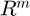
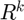
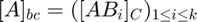
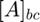
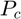
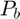

Exercice 9, Changement de bases
Soit Em, Ek les bases canoniques de  et  et B et C les nouvelles bases. On a que pour une matrice A représenté dans les bases Em et Ek, la matrice dans les bases B et C, A_bc, est défini comme:

On sait aussi que  est donnée par la relation suivante: soit  la matrice de passage de la base C à la base canonique, i.e. la matrice dont les colonnes sont les éléments de C, on a: où  et sont données en argument.
function Abc = basis_change(A, Pb, Pc) % Prend la matrice A exprimés par rapport aux bases canonique et % retourne A exprimés par rapport aux bases B et C grâces aux matrices % de passages, Pb et Pc, passées en argument. % Abc = Pb^(-1)*A*Pc; end
Not enough input arguments.
Error in noah_munz_ex9 (line 23)
Abc = Pb^(-1)*A*Pc;